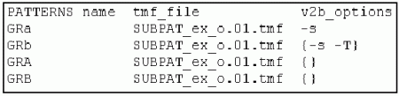

The PATTERNS Section
The PATTERNS section of the vector configuration file, which is introduced by the keyword PATTERNS, is organized as a table. Every row of the table specifies information for one pattern, every column contains a certain type of information. aiv calls the low level tool v2b for every row with the information of this row.
The format of the table is variable. Optional columns can be omitted, and the order of the columns is arbitrary. The actual format of the table is defined in a header row. This row specifies which columns exist and how they are ordered. The columns have fixed names.
It is possible that more than one entry belongs to one cell of the table. In this case, the entries must be enclosed by curly brackets.
The following figure shows an example of a PATTERNS section:

The following list explains all columns of the PATTERNS section. The columns are ordered alphabetically by name. Note that the default values of the individual columns apply automatically only if the respective column is omitted from the table. If it is present, every value, even the default value, must be entered explicitly.
- avc_file (optional): specifies the name of the ASCII vector file. The default is that the name consists of the pattern name, as specified in the name column, and of the extension *.avc or *.avc.gz. If you specify this parameter, the avc_pipe parameter must be omitted.
- avc_pipe (optional): specifies a Linux command which converts a vector source file into regular ASCII interface vector data. If you specify this parameter, the avc_file parameter must be omitted.
- avc_time (optional): specifies the name of a file whose timestamp controls the execution of the Linux command specified in the avc_pipe column. The command is only executed if the timestamp of the binary vector file for the pattern specified by name is earlier than the timestamp of the avc_time file.
- context (optional): specifies the context for the pattern. The context
must be defined in the pin configuration file. Contexts control whether pins are used as
differential or as single-ended pins. The default is the context with the fixed name
DEFAULT. In this context all pins are single-ended. If a pair of pins is used as
differential pins, the negative pin is ignored in the translation of the ASCII vector file.
If you create the vector configuration file manually, make sure that you specify the same context for the timing and the vector translation of the respective pattern.
- name (mandatory): specifies the name of a pattern; the name can consist of up to 128 alpha-numeric characters. The name of the binary vector file for the pattern is based on this name. Furthermore, the ASCII interface expects by default that the name of the ASCII vector file for the pattern consists of the name specified here and of the extension *.avc or *.avc.gz. If the ASCII vector file has a different name, it must be specified in the avc_file column.
- port (optional): specifies the port to which the pattern belongs. If this column is omitted, the default port @, which contains all pins, is assumed. The specified port is added to all instructions of the sequencer program that is generated from the ASCII vector file. The port of the pattern can also be specified in the ASCII vector file (seeSpecifying the Port in the ASCII Vector File). The entry in the ASCII configuration vector file has priority.
- tmf_file (mandatory): specifies the timing map file for the pattern.
- v2b_options (optional): Here you can specify parameter options that are to be passed to v2b for translation of the ASCII vector file belonging to the pattern.